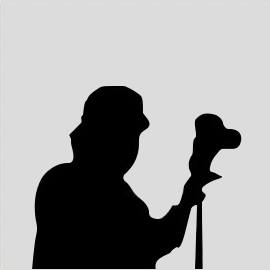

Allgaeu
//
Bavaria
//
Germany
//
Europe
//
The World
Open Map
Close Map

Severin Geissler
Ottobeuren Church
This is inside the wonderful Church in Ottobeuren.
German:
Die spätbarocke Basilika wurde als Kl...
This is inside the wonderful Church in Ottobeuren.
German:
Die spätbarocke Basilika wurde als Klosterkirche 1737–1766 von Simpert Kraemer (bis 1748) und Johann Michael Fischer erbaut und ist dem Hl. Alexander und dem Hl. Theodor geweiht. Der Bau fand in der Regierungszeit der Äbte Rupert Neß und Anselm Erb statt. Zur reichen Ausstattung gehören unter anderem Kuppel- und Deckenfresken sowie Altarbilder der Vetter Johann Jakob und Franz Anton Zeiller aus Tirol, Stuckfiguren von Johann Joseph Christian, Stuckarbeiten von Johann Michael Feuchtmayer dem Jüngeren. Fast unverändert sind die zwei weithin berühmten barocken Chororgeln von Karl Joseph Riepp: die viermanualige Dreifaltigkeitsorgel mit 47 Registern und die zweimanualige Heiliggeistorgel mit 27 Registern, beide mit französischem Klangbild. Der Erbauer betrieb nebenher unter anderem in Dijon (Burgund) einen Weinhandel. Das Chorgestühl stammt von Martin Hermann (Schreinerarbeiten) und Johann Joseph Christian (Reliefs) und gilt als eines der schönsten des süddeutschen Barock. Mittelpunkt der Kirche ist ein romanisches Kruzifix (um 1220). Die ungewöhnliche Nord-Süd-Ausrichtung der Kirche ist durch ihre Lage innerhalb der Gesamtanlage bedingt, deren Grundriss die Form eines Kreuzes hat. 1926 wurde die Klosterkirche von Papst Pius XI. zur Päpstlichen Basilika erhoben.
Share this panorama

For Non-Commercial Use Only
This panorama can be embedded into a non-commercial site at no charge. Read more
Do you agree to the Terms & Conditions?
For commercial use, contact us
LICENSE MODAL